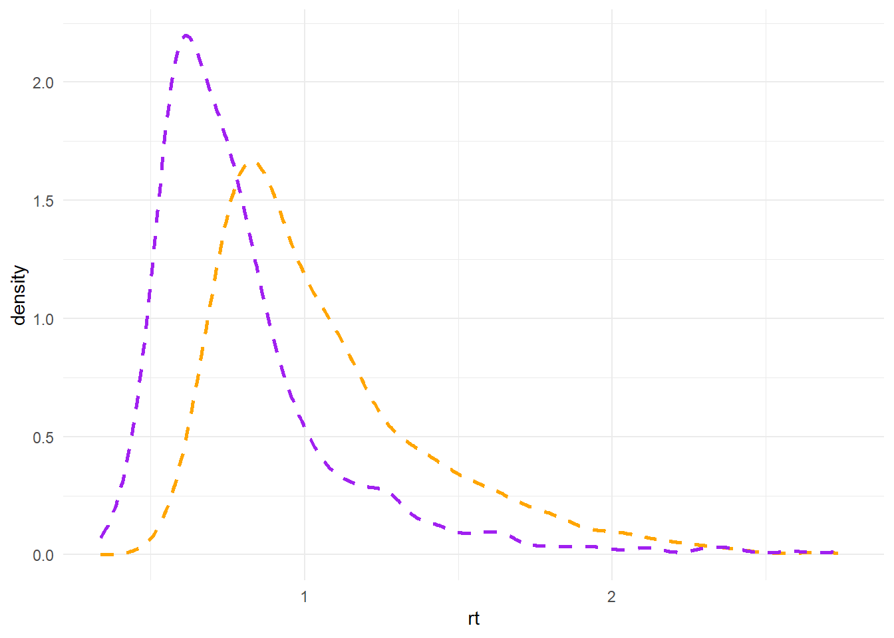
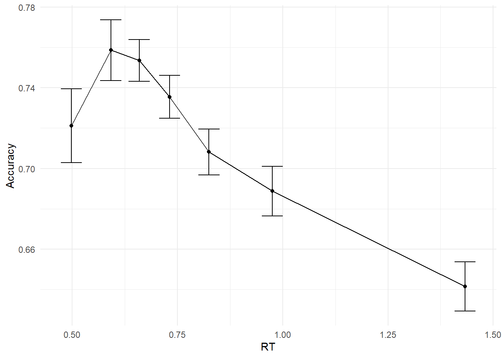

library(cmdstanr)
library(data.table)
library(ggplot2)
source("functions/CAF.R")
source("functions/correlated_errors.R")
source("functions/rWald.R")Autoregressive RDM
In this document, we will discuss, fit, and evaluate the Racing Diffusion Model (RDM) using Stan. Of special interest is whether we can make the parameters of the RDM fluctuate according to an AR(1) process. For a tutorial on how to do this with the DDM, check this document instead.
The Racing Diffusion Model (RDM)
Bla.
Exploring data
Lets begin by loading some packages and useful functions:
Before we fit the RDM and discuss its autoregressive extension, lets explore some empirical data we would like to explain. We will use Experiment 2B from Desender et al. (2022). Let’s load it and do some simple data wrangling:
# Load data
MyData <- fread("https://raw.githubusercontent.com/kdesende/dynamic_influences_on_static_measures/refs/heads/main/data_exp2B.csv")
# Get nicer participant numbers
MyData$pp <- ordered(MyData$sub)
levels(MyData$pp) <- c(1:99)
# Recode stimulus 0 to -1
MyData[stim==0,stim:=-1]
# Mark trials for exclusion
MyData$yi <- 1
MyData[rt<0.1|rt>3.0,yi:=0]Note that we use $yi to mark fast and slow outliers with a 0, while all other trials are marked with a 1. This is how we deal with data exclusion, while maintaining the original temporal structure of the data.
Visualizing RT distributions
We can visualize two marginal RT distributions for illustration purposes:
ggplot() +
geom_density(data = MyData[pp==69 & yi==1], linetype="dashed",linewidth=1, aes(x=rt), color="orange") +
geom_density(data = MyData[pp==15 & yi==1], linetype="dashed",linewidth=1, aes(x=rt), color="purple") +
theme_minimal()
Visualizing the conditional accuracy function (CAF)
The Conditional Accuracy Function (CAF) partitions this response time distribution into different regions with equal numbers of trials in them. It then visualizes the proportion of correct trials in each bin against the mean RT of the trials in that bin. This reveals substantially more errors for very fast responses, as well as substantially more errors for very slow responses.
# Get CAF and confidence interval
CAF <- calculate_group_caf(MyData[yi==1], "rt", "cor", "pp", num_bins=7)
CAF[,min_acc:=mean_acc-1.96*se_acc]
CAF[,max_acc:=mean_acc+1.96*se_acc]
## Group conditional accuracy function
ggplot(CAF, aes(x=mean_rt, y=mean_acc)) +
geom_point() +
geom_errorbar(aes(ymin=min_acc,ymax=max_acc),width=0.05) +
geom_line() +
theme_minimal() +
xlab("RT") + ylab("Accuracy")